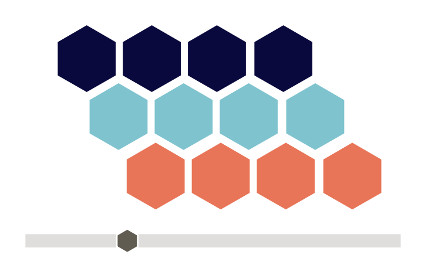
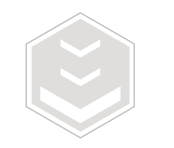
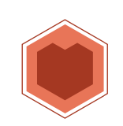
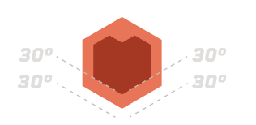
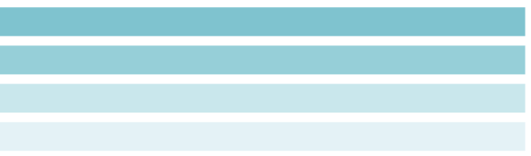

Vormentaal
De zeshoek vormt de basis van de vormentaal op het platform. Iconen en
knoppen hebben een zeshoekige vorm.
De vorm kan ook gebruikt worden als slider, kader voor tekst of beeld of
als stijl-element. Meerdere zeshoeken kunnen als een honingraat in
elkaar schuiven, bijvoorbeeld als er een grid van elementen moet worden
gebouwd.
Zeshoeken
De zeshoeken kunnen aan elkaar geklikt worden naar eigen inzicht, maar
laat ze niet overlappen. Zorg voor een tussenruimte van tenminste 2px.

Zorg dat de hoeken van je iconen overeenkomen met de hoeken van de
basis-zeshoek.



Naast de zeshoek kun je stroken of handen gebruiken om content van
elkaar te scheiden, om of overzicht te creëren. Zorg voor 8px verticale
tussenruimte.
